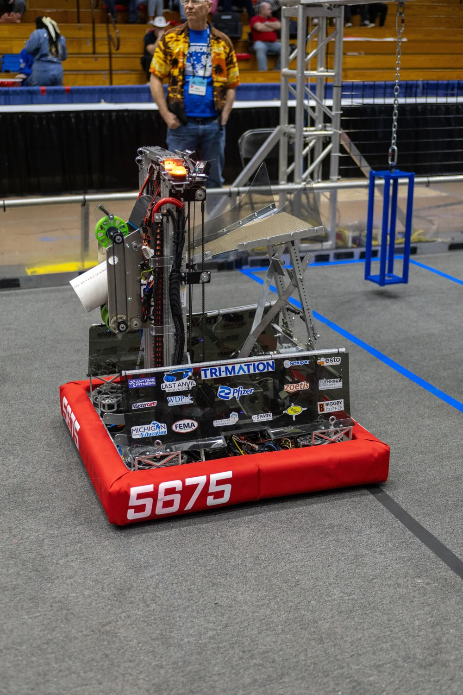
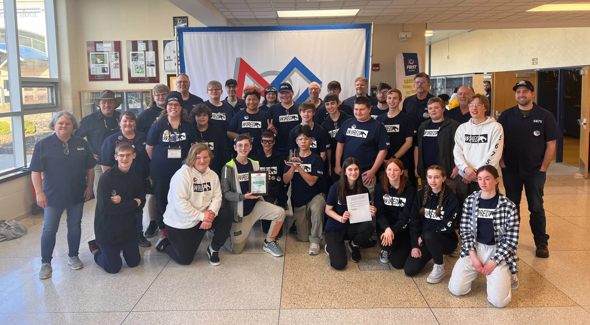

Programming with the WiredCats
Programming with the WiredCats01 / JAVA FOUNDATIONS
Think in Java.
Print a message. Name a value. Make a decision. Discover loops, methods and objects.
Start the class lessons
WIREDCATS 5675 / THE PROGRAMMING LAB
Your ideas can move a robot. Start with “Hello World,” then learn to make decisions, create commands and understand what your robot is doing.
No experience needed. Just curiosity and a laptop.
You do not need to understand a whole robot on day one. Each part builds on the ideas you have already tried.
Programming with the WiredCatsPrint a message. Name a value. Make a decision. Discover loops, methods and objects.
Start the class lessonsNote Worthy · 2024Explore the robot’s heartbeat, groups of devices, controller input and commands.
Meet the robot loop
Catalyst · 2025Discover swerve, pose, paths and cameras. Use recorded evidence to investigate.
Explore position and poseNobody starts knowing how to program a robot. Try a small change, ask a question, and share what you discover.
Meet the WiredCats ↗
Follow a clear example. Connect a new idea to something familiar.
Predict a result, change one thing, then run it and look closely.
Explain what happened. A question is a good result, too.
As you move through the lessons, numbers become robot positions. Explore this simple path one step at a time.
Meet position and pose →A coordinate exercise, not the 2027 field. The arrow shows the robot’s illustrated heading. Animation starts only when you choose it.
A program follows instructions. Here, one instruction prints one message. Preview the result, then make your own version in the home exercises.
Get the tools and downloadable Java exercises →
Preview only: this illustration does not compile Java. The home starter runs real Java on your laptop.
Look for a friendly nudge to pause, predict and explain what you see.

Connect each new idea to something you can run, change and explain.

Make a guess before you run the code. Compare your idea with the result.
New students use stable WPILib 2026 tools. You can learn about SystemCore now without installing alpha packages. At home or with a partner, begin with one working program.
At home or in class, take Lesson 1; tools already installed? Continue with Lesson 2. Swap the keyboard every 10–15 minutes if you work together.
After Java objects, open your first simulation project. Build a button, drive the model, record a log, follow a path and recover from a fault in six hands-on labs.
After a few focused minutes, show a mentor what you expected, what happened, and the first relevant error.
Guided team examples explain the symbols and say which lessons prepare you. The full robot can wait.
Understand the controller’s job and why the programming skills you learn now still matter.
After robot basics, inspect five real state changes. Make a claim you can support with recorded data.
The original chapter anchors still lead to their expanded lessons. Practice workbook · Pose lab · Mentor notes